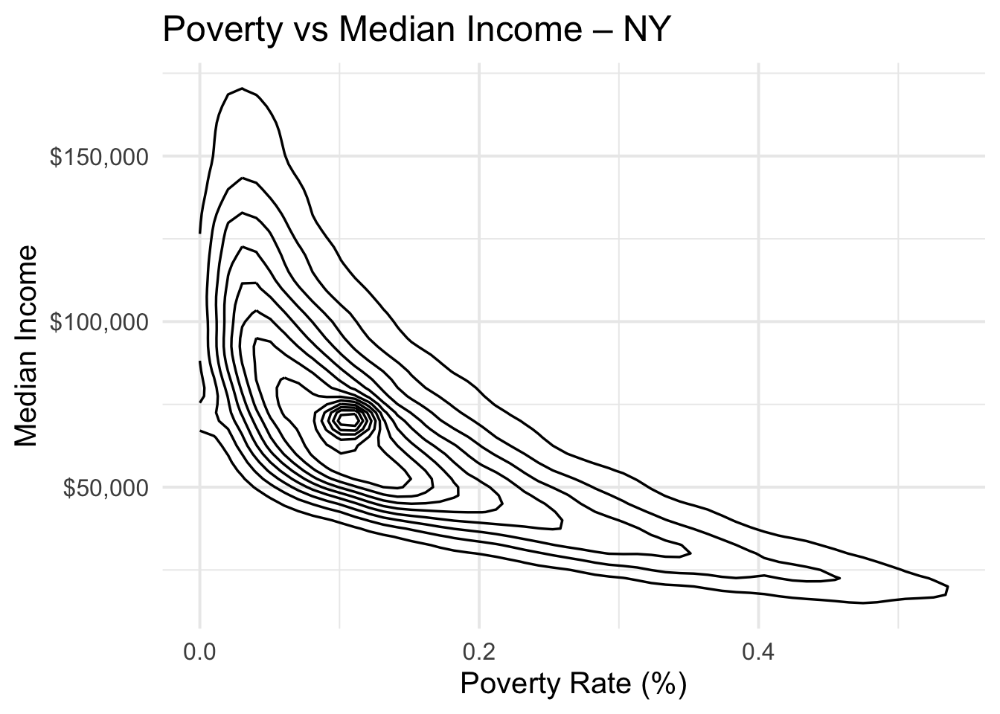
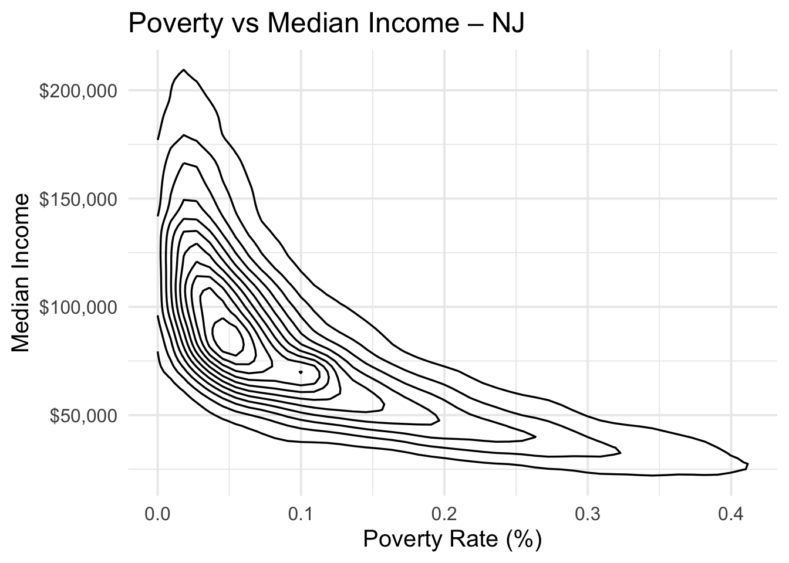
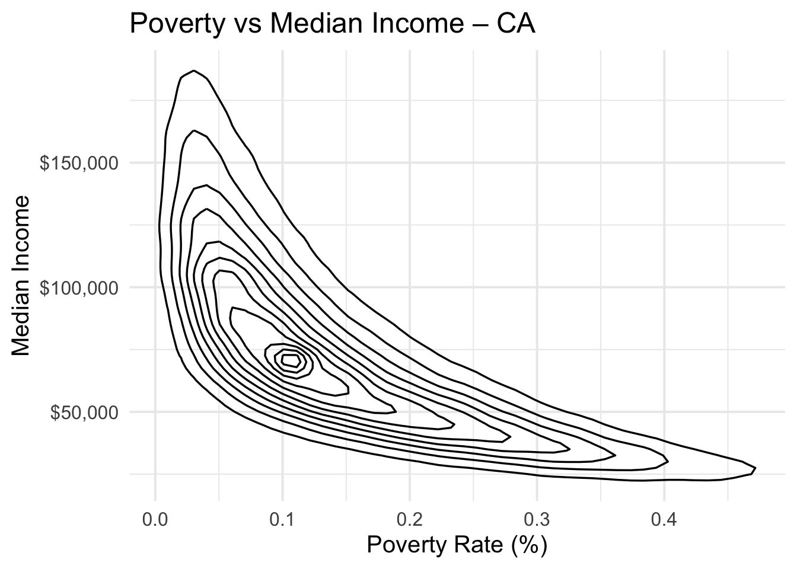
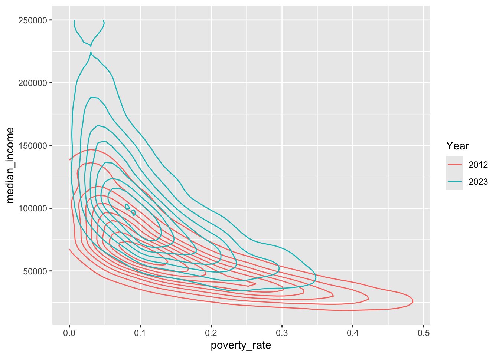
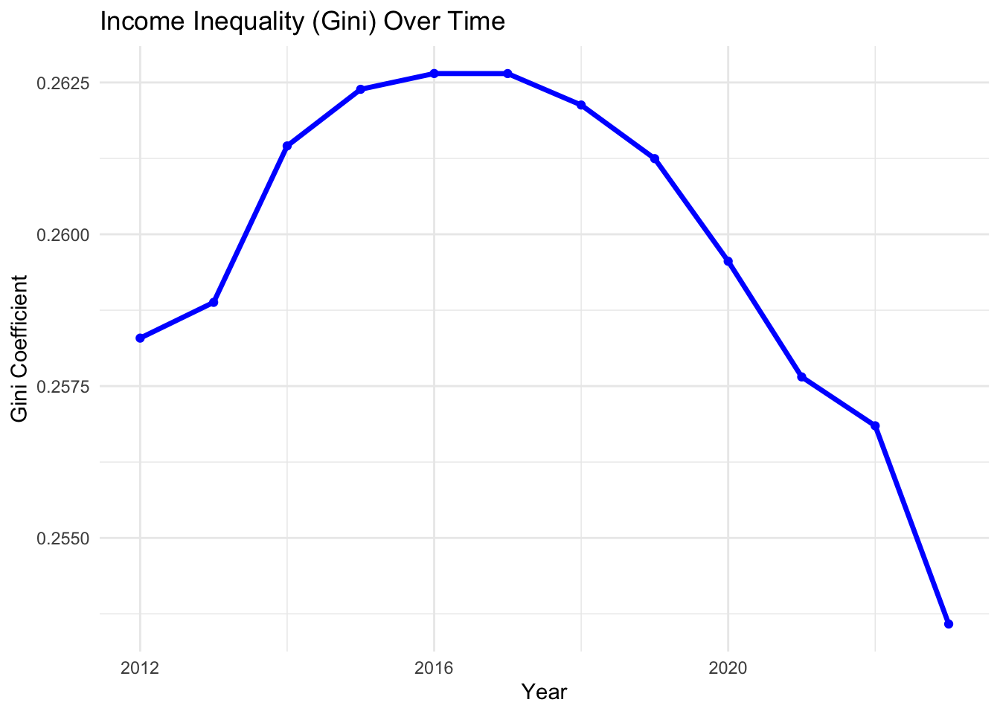
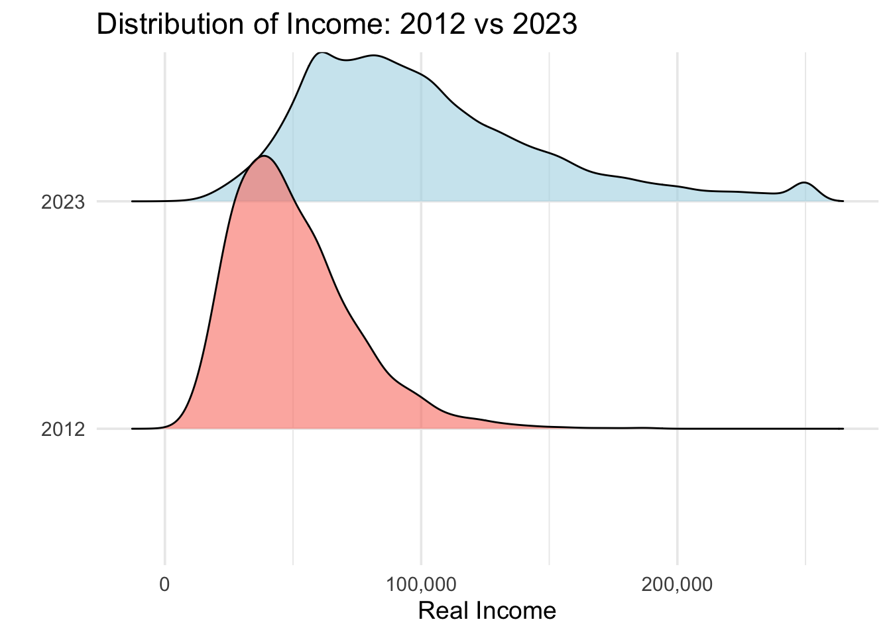
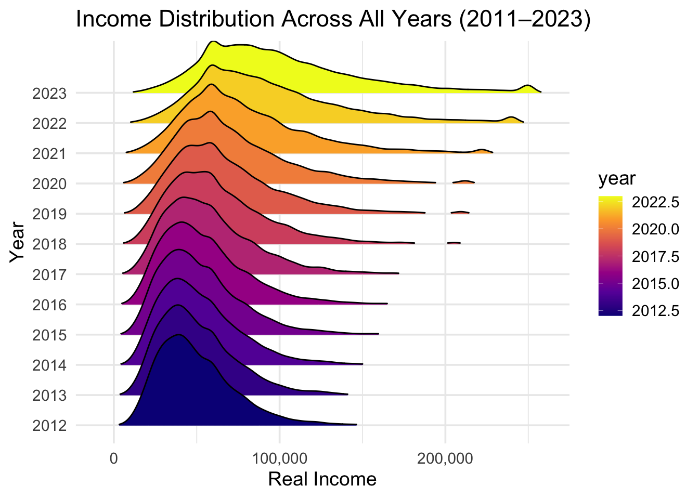
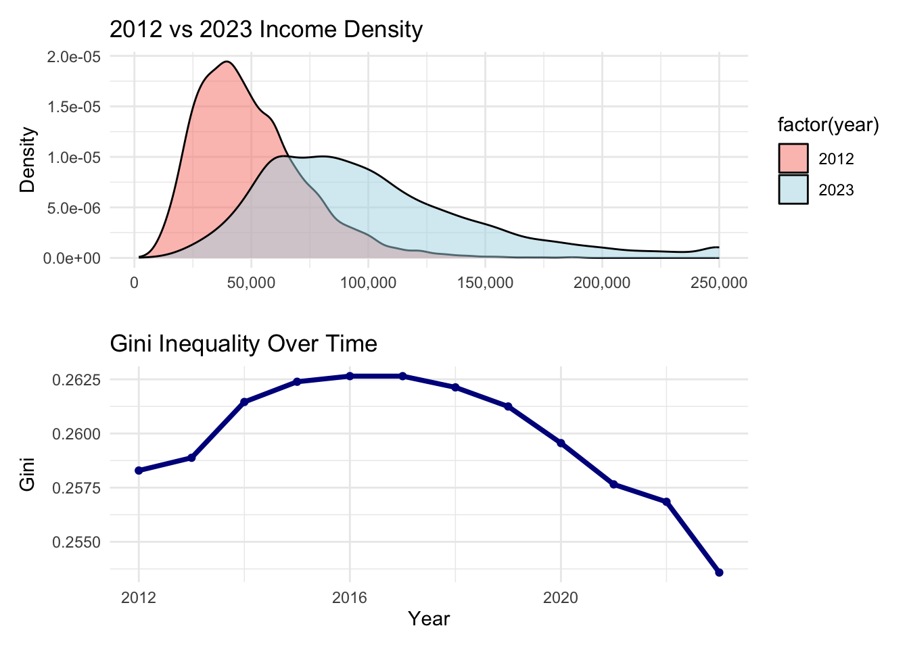

We can clearly see more college educated residents. By 2023, the distribution shifts right which means the education is more spread our across the population. This could indicate gentrification as more educated (assumingly higher earners) move to these areas. A larger share of the population has college degrees in 2023 than in 2012. This could be the people already living there getting educated or the people there in 2012 were forced out due to gentrification, leading to high income earners with degrees moving in. Now let’s graph education and income to explore my hypothesis.
-California has the largest right shift and expansion in income to the general population. This is a very long right tail into $250k+. -New Jersey has a less extreme tail but it’s still showing a wide gap between low and high-income people. -New York is very similar to CA and stretches to the high end salaries. This could indicate significant income growth.
This makes me ask if fthe population has shifted so we will analyze that next.
We can see that as % college educated increases, income increases. Meaning education is one of the strongest predictors of income. At the same education level are richer in 2023 than in 2012. This could indicate higher income earners and high education people are moving to these areas (gentrification). There is a strong, positive education income relationship, and it becomes steeper over time. Recently incomes rise faster as education increases. My overall impression is that income is rising but becoming more unequal while education is also rising and they seem to be correlated. Let’s do some map analysis on NY specifically so we can check if we can notice any other patterns visually.
For NY we can conclude that statewide median income rises from 2012 to 2023. With the brightest and highest income areas intensifying. Although rent increases are more agressive than income growth which could push the locals out of their home state/county. Poverty rate has a slight decrease which could be a sign of higher income earners moving in and people who are struggling being pushed out. Then in the gentrification map we notice the places with steep rent increases, declining poverty and increasing education levels are getting more gentrification results.
For NJ we see that NJ suburbs near NYC have income growth. Rent growth tracks closely with areas that also saw increases in education and also proximity to NYC. Gentrification pattern is consistent with these results as well.
We see a consistent rise in income around metro areas and areas previously already high in income, which could lead to more segregation. Rent increases at a much much higher rate than income which could also cause displacement, there is a decrease in poverty as well which could mean high income earners moving in. These high income earners must have degrees as well since education increases accross the state.
Let’s double check our work with some more analysis.
Code
income_trend <- acs_clean |>group_by(state, year) |>summarise(income =weighted.mean(median_income, total_population))ggplot(income_trend, aes(year, income, color = state)) +geom_line(size =1.3) +geom_point(size =3) +scale_y_continuous(labels = dollar) +scale_color_viridis_d() +labs(title ="Median Income Trends (2011–2023)", y ="Median Income")
There is a negative relationship between these two variables as poverty rate increases, median income decreases. Most of the US lies between 50k to 80k salary band. We can also show the same with a 2d density plot.
Code
plot_poverty_income <-function(state_name) {ggplot( acs_clean |>filter(state == state_name),aes(x = poverty_rate, y = median_income) ) +geom_density_2d(color ="black", linewidth =0.6) +scale_y_continuous(labels = dollar) +labs(title =paste("Poverty vs Median Income –", state_name),x ="Poverty Rate (%)",y ="Median Income" ) +theme_minimal(base_size =15)}
Code
plot_poverty_income("NY")

Code
plot_poverty_income("NJ")

Code
plot_poverty_income("CA")

Now lets compare the 2012 2d density plot of povery rate and median income. We see that median incomes are higher in 2023 for areas with similar poverty rates. This is a crucial part, it reflects the actual patterns where we see wage growth, inflation adjustments, and maybe even post pandemic income shifts.
Code
acs_clean |>filter(year ==c(2012, 2023), state =="CA") |>ggplot(aes(poverty_rate, median_income, color =factor(year))) +geom_density_2d() +labs(color ="Year")

To answer the question “How have inequality and segregation evolved between 2011 to 2023?” we have to take a holistic approach. First lets look at the income inequality over time.
Code
ineq_df <- acs_clean |>filter(!is.na(real_income), real_income >0) |>group_by(year) |>summarise(gini = ineq::Gini(real_income),theil = ineq::Theil(real_income) )ggplot(ineq_df, aes(x = year)) +geom_line(aes(y = gini), linewidth =1.2, color ="blue") +geom_point(aes(y = gini), color ="blue") +labs(title ="Income Inequality (Gini) Over Time",y ="Gini Coefficient", x ="Year") +theme_minimal()

From 2012 to about 2016 or 2017, the Gini coefficient increases. This could be because of growing income separation between higher and lower earning people and early signals consistent with post recession recovery where high income households gain more. This could indicate new investment in certain neighborhoods, maybe wage growth concentrated among high skill jobs and uneven housing appreciation which could lead to gentrification. The Gini values peak around 0.2625.This could mean inequality hit a maximum and after this the gini begins shifting in the opposite direction. From 2017 and forward, the Gini decreases with a sharp drop after 2020. This could indicate that income distribution became somewhat more equal, lower income households may have received some support or raises in wages which checks out since during the pandemic there were policies to boost the economy (stimulus, unemployment benefits, rental aid) which might have helped close the gap in inequality. Housing markets might have also not had any crazy activity in these low income areas. Although a good question to ask here is, did the wages, housing market and overall health of these states get fairer or did the high income earners move away from these areas leaving a more lower average to reach for low income earners.
Next, let’s take a look at this hypothesis.
Code
library(ggridges)library(dplyr)library(ggplot2)library(scales)income_clean <- acs_clean |>filter(!is.na(real_income), real_income >0, real_income <300000)income_two_years <- income_clean |>filter(year ==c(2012, 2023))ggplot(income_two_years, aes(x = real_income, y =factor(year), fill =factor(year))) +geom_density_ridges(alpha =0.6, color ="black", scale =1.2) +scale_x_continuous(labels = comma) +scale_fill_manual(values =c("2012"="salmon", "2023"="lightblue")) +labs(title ="Distribution of Income: 2012 vs 2023",x ="Real Income",y ="" ) +theme_minimal(base_size =14) +theme(legend.position ="none")

As we see from above, not only did the high income earners leave making the disctribution more flat, but the overall spread of income seems to be a lot more fair now as well.
Code
income_all_years <- income_clean |>filter(year >=2011, year <=2023)ggplot(income_all_years, aes(x = real_income, y =factor(year), fill = year)) +geom_density_ridges_gradient(scale =3, rel_min_height =0.01) +scale_x_continuous(labels = comma) +scale_fill_viridis_c(option ="C") +labs(title ="Income Distribution Across All Years (2011–2023)",x ="Real Income",y ="Year" ) +theme_minimal(base_size =14)

Code
library(patchwork)p1 <-ggplot(income_two_years, aes(x = real_income, fill =factor(year))) +geom_density(alpha =0.5) +scale_x_continuous(labels = comma) +scale_fill_manual(values =c("2012"="salmon", "2023"="lightblue")) +labs(title ="2012 vs 2023 Income Density", x ="", y ="Density") +theme_minimal()library(dplyr)library(ineq)ineq_seg <- acs_clean |>filter(!is.na(real_income), real_income >0) |>group_by(year) |>summarise(gini = ineq::Gini(real_income),theil = ineq::Theil(real_income),dissimilarity =0.5*sum(abs((black_pop /sum(black_pop, na.rm =TRUE)) - (white_pop /sum(white_pop, na.rm =TRUE))),na.rm =TRUE) ) |>arrange(year)p2 <-ggplot(ineq_seg, aes(year, gini)) +geom_line(color ="darkblue", linewidth =1.3) +geom_point(color ="darkblue") +labs(title ="Gini Inequality Over Time", x ="Year", y ="Gini") +theme_minimal()p1 / p2

From the above graphs we could deduce that households are richer in 2023 than in 2012, but the distribution also stretches more, which could indicate changes in inequality and possible early phase gentrification in some areas. Between 2012 and 2023, incomes increased, but the pattern of growth then shifts, inequality worsened until 2016–2017 as high income households pulled away, then narrowed after 2018 as middle and lower income groups experienced faster gains.